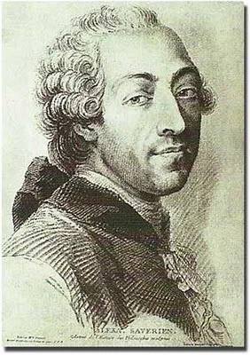

Занимаясь в свое время изучением жизни и творчества Лагранжа, встретил много интересных работ о его земляках и современниках, о которых сейчас уже почти не пишут. Среди них был и Александр Саверьен (Alexander Savérien, 1720-1805), французский математик, философ и писатель, написавший также несколько трудов по морскому искусству и кораблестроению. После окончания иезуитского колледжа в Арле, Саверьен получает назначение на военный флот, в Марсель в качестве garde de l'étendard (младшая офицерская должность на галерах Франции, соответствующая должности гардемарина на других кораблях флота). Преуспев в морских науках, он уже в двадцать лет получает диплом морского инженера и отправляется из Прованса в Париж, где в 22 года становится профессором. В те годы такое было нередко. Вспомним хотя бы того же Лагранжа, который в 18 лет стал профессором артиллерийской школы в Турине. Но в отличие от Лагранжа, Саверьен не занимался глубоко ни одной из наук, постепенно перешел к философии, удалился от дел и умер забытый всеми.

Сейчас его вспоминают в основном в связи со скандалами, которые он провоцировал в полемике с Вольтером. Связаны эти скандалы были главным образом с Пьером Франсуа Дефонтеном-Гюйо (Desfontaines-Guyot). Дело в том, что уже в первой своей работе по морской навигации (Discours sur la navigation et la physique expérimentale, 1742) Саверьен весьма тепло упоминал своего иезуитского наставника Дефонтена. Последний же, выйдя из ордена, посвятил себя литературной деятельности. Его злое и остроумное перо создало ему массу врагов, среди которых был и Вольтер, который осыпал Дефонтена беспощадной бранью в эпиграммах. Дефонтен не остался в долгу и издал "Henriade" Вольтера с обстоятельной и безжалостной критикой. Эта полемика не обошла и русскую литературу. И.Дмитриев в 1806 году в эпиграмме на Каченовского «Ответ», написал:
Нахальство, Аристарх, таланту не замена:
Я буду все поэт, тебе наперекор!
А ты — останешься все тот же крохобор,
Плюгавый выползок из гузна Дефонтена.
Концовка эпиграммы Дмитриева — буквальный перевод сатиры Вольтера «Le pauvre diable» («Бедняга»). Эту же строку использовал и Пушкин в своей эпиграмме все на того же Каченовского («Бессмертною рукой раздавленный зоил...») в связи с его нападками на «Историю государства Российского» Карамзина,.
Но вернемся к Саверьену. Сейчас серьезно его работы уже не воспринимают, относят их к категории научно-популярных. Вместе с тем, отдельные из них несомненно представляют интерес не только как памятники эпохи, но и как источники полезной информации. К таким работам Саверьена несомненно относится Dictionnaire historique, théorique et pratique de marine в двух томах (1759). Нас будет интересовать сейчас его обстоятельная статья о галеасе (GALÉASSE). Вот некоторые отрывки из нее:
ГАЛЕАС. Большое низкобортное судно, самое большое из всех гребных судов. Имеет три мачты, которые называются artimon, mestre и trinquet, и которые не могут быть убраны (ранее мы обстоятельно рассматривали вопрос о том, когда и зачем рубили рангоут на галерах – g._g.); три батареи в носу, из которых самая нижняя из двух орудий, каждое из которых стреляет 36-фунтовыми ядрами, вторая также из двух орудий, которые стреляют 24-фунтовыми ядрами, и, наконец, третья еще из двух орудий, стреляющих 2-фунтовыми ядрами; также имеются две батареи в корме, каждая из трех 18-фунтовых орудий на борт.
Этот корабль, который по причине своих громадных размеров очень напоминает крепость на море, раньше использовался во Франции, но в настоящее время галеасы находятся в боевом строю только в Венеции. Ими командуют венецианцы благородного происхождения, которые своей головой клянутся не уклоняться от боя с двадцатью пятью галерами противника. Должно быть галеас очень полезный корабль, и мы вероятно ошиблись, отказавшись от их использования.»
Далее Саверьен приводит перечень достоинств галеасов, к которым он в первую очередь относит мощь их артиллерии и способность, благодаря небольшой осадке, близко подходить к побережью противника для бомбардировки его укреплений. Но помимо подробного описания артиллерии на борту галеаса, Саверьен дает своего рода «штатное расписание» личного состава этого корабля. Об этом мы поговорим в следующий раз.